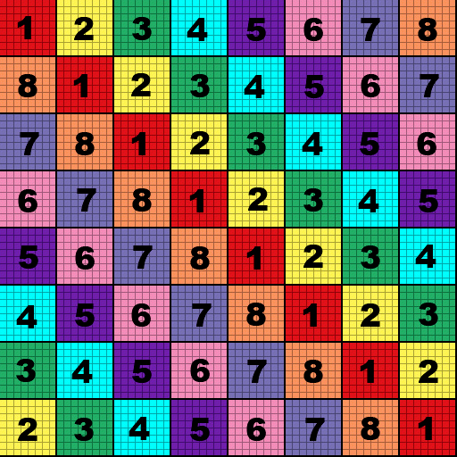

<html lang="en">

<head>
    <meta charset="UTF-8">
    <meta name="viewport" content="width=device-width, initial-scale=1.0">
    <title>009 - FunWithWebGL</title>
    <style>
        body {
            background-color: teal;
            text-align: center;
        }
    </style>
</head>
<script src="gl.js"></script>
<script src="Math.js"></script>
<script src="sh.js"></script>
<script src="RenderLoop.js"></script>
<script src="Transform.js"></script>
<script src="Model.js"></script>
<script src="Primatives.js"></script>
<script src="Camera.js"></script>
<script src="Shader_Extra.js"></script>
<script>
    window.onload = () => {
        const gl = GLInstance().fFitScreen().fClear();

        const gCamera = new Camera(gl)
        gCamera.transform.position.set(0, 1, 3)
        gCameraCtrl = new CameraController(gl, gCamera)
    
        //Load resources
        const texture = document.getElementById("imgTex")
        gl.fLoadTexture("tex001", texture)

        // Setup Grid
        const gGridShader = new GridAxisShader(gl, gCamera.projectionMatrix)
        const gGridModel = Primatives.GridAxis.createModel(gl, true);

        // Setup Quad
        const gShader = new TestShader(gl, gCamera.projectionMatrix).setTexture(gl.mTextureCache["tex001"])
        const gModel = Primatives.Quad.createModel(gl)
        gModel.setPosition(0, 0, 0).setScale(0.2, 0.2, 0.2)

        const RLoop = new RenderLoop(onRender).start();

        function onRender(dt) {
            gCamera.updateViewMatrix();
            gl.fClear();

            // This shader rendering order matters.
            // If gShader goes before, the grid can't be seen through. 
            // We learn how to handle this in a future lesson
            gGridShader.activate()
            .setCameraMatrix(gCamera.viewMatrix)
            .renderModel(gGridModel.preRender())

            gShader.activate().preRender()
            .setCameraMatrix(gCamera.viewMatrix)
            .renderModel(gModel.preRender())
        }
    }

    class TestShader extends Shader {
        constructor(gl, pMatrix) {
            const vertSrc = ShaderUtil.domShaderSrc("vertex_shader")
            const fragSrc = ShaderUtil.domShaderSrc("fragment_shader")
            super(gl, vertSrc, fragSrc)

            //Standard Uniforms
            this.setPerspective(pMatrix)
            this.mainTexture = -1
            gl.useProgram(null);
        }

        setTexture(texID) { this.mainTexture = texID; return this;}

        //Override 
        preRender() {
            // Setup Texture 
            this.gl.activeTexture(this.gl.TEXTURE0)
            this.gl.bindTexture(this.gl.TEXTURE_2D, this.mainTexture)

            // set which texture units to render with.
            /**
             * WebGL has something called "texture units". You can think of it as an array of references to textures. You tell the shader which texture unit to use for each sampler.
             */
             
            this.gl.uniform1i(this.uniformLoc.mainTexture, 0) // texture unit 0 - https://webglfundamentals.org/webgl/lessons/webgl-2-textures.html
            return this
        }
    }
</script>

<body>
    <!-- <canvas id="canvas-gl"></canvas> opt to creating in gl.js for intellisense -->
</body>

<!-- 
    Turn off Chrome web security to allows cors error.
    This is a secuirty feature essentially preventing access to the user filesystem to load into GPU
    open -n -a /Applications/Google\ Chrome.app/Contents/MacOS/Google\ Chrome --args --user-data-dir="/tmp/chrome_dev_test" --disable-web-security
-->
<script id="vertex_shader" type="x-shader/x-vertex">#version 300 es
    in vec3 a_position;
    in vec2 a_uv;

    uniform mat4 uMVMatrix;
    uniform mat4 uCameraMatrix;
    uniform mat4 uPMatrix;

    out highp vec2 texCoord; // Interpolate UV values to the fragment shader

    void main(void){
        texCoord = a_uv;
        gl_Position = uPMatrix * uCameraMatrix * uMVMatrix * vec4(a_position, 1.0); // order counts!
    }
</script>

<script id="fragment_shader" type="x-shader/x-fragment">#version 300 es
    precision mediump float;

    in highp vec2 texCoord; // what pixel to pull from the texture
    uniform sampler2D uMainTex; // Holds the texture loaded into the GPU

    out vec4 finalColor;
    
    void main(void) { // weird that it's s,t but its just x,y
        finalColor = texture(uMainTex, vec2(texCoord.s, texCoord.t)); // Set color of the pixel at that UV location
    }
</script>

</html>